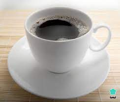
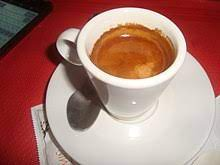
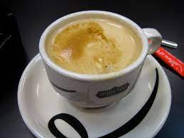

Café americano
El café americano es una mezcla de café expreso y agua caliente, dando como resultado una bebida más suave que el café expreso pero con un sabor más intenso que el café de filtro.
Café expreso
El café expreso es una bebida preparada a partir de granos de café molidos finamente y agua caliente a alta presión. Es una bebida fuerte y concentrada, con una capa espumosa en la superficie conocida como "crema".
Café con leche
El café con leche es una bebida compuesta de partes iguales de café expreso y leche caliente. Es una bebida popular en todo el mundo, y se puede servir con una capa de leche espumosa en la parte superior.